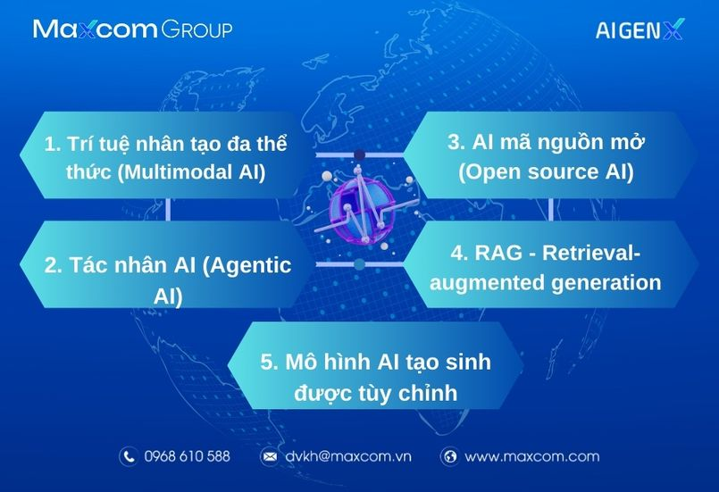

Sau khi ChatGPT ra mắt vào tháng 11 năm 2022, năm 2023 đánh dấu bước ngoặt lớn của trí
tuệ nhân tạo (AI - Artificial
Intelligence). Những phát triển trong năm qua, từ bối cảnh nguồn mở sôi động đến các mô
hình đa thể thức phức tạp,
đã đặt nền móng cho những tiến bộ đáng kể trong AI.
Mặc dù những sáng kiến mới dựa trên AI vẫn thu hút được sự chú ý của giới công nghệ toàn
cầu, nhưng nhiều tổ chức,
doanh nghiệp đang dần di chuyển trọng tâm từ thử nghiệm sang ứng dụng trong thế giới
thực.
Xu hướng AI năm 2024 phản ánh sự tinh tế và thận trọng trong chiến lược triển khai và
phát triển trí tuệ nhân tạo,
đặc biệt chú trọng đến đạo đức, an toàn và bối cảnh pháp lý đang xây dựng, hoàn thiện.
Dưới đây là 10 xu hướng AI và máy học (ML - Machine learning) hàng đầu cho năm 2024.
1. Trí tuệ nhân tạo đa thể thức (Multimodal AI)
AI đa thể thức vượt xa khả năng xử lý dữ liệu một chế độ truyền thống. Nó bao gồm nhiều
loại đầu vào, chẳng hạn
như văn bản, hình ảnh và âm thanh. Điều này đã tạo ra một bước tiến gần hơn tới khả năng
AI bắt chước con người
xử lý thông tin giác quan đa dạng.
Mark Chen, trưởng phòng nghiên cứu Multimodal và Frontiers tại OpenAI, cho biết: “Các
giao diện của thế giới là
đa phương thức. Chúng tôi muốn mô hình (model) của mình nhìn thấy những gì chúng tôi
thấy và nghe được những gì
chúng tôi nghe, đồng thời tạo ra nội dung thu hút nhiều giác quan của con người."
Khả năng đa thể thức đã được minh họa thông qua phần mềm ChatGPT. Trong mô hình GPT-4,
OpenAI đã cho phép phản
hồi đầu vào hình ảnh và âm thanh.
Các ứng dụng trong thế giới thực của AI đa thể thức rất đa dạng và ngày càng mở rộng. Ví
dụ, trong chăm sóc sức
khỏe, multimodal AI có thể phân tích hình ảnh y tế dựa trên lịch sử bệnh nhân và thông
tin di truyền để cải
thiện mức độ chính xác của chẩn đoán.
Ngoài ra, mô hình AI đã thể thức có khả năng học hỏi thông qua dữ liệu do con người cung
cấp. "Khi model của
chúng
tôi ngày càng tiến bộ hơn trong việc mô hình hóa ngôn ngữ và bắt đầu đạt đến giới hạn
học hỏi từ ngôn ngữ, chúng
tôi
muốn cung cấp cho model thông tin đầu vào thô từ thế giới xung quanh để chúng tự nhận
thức và vẽ ra những hình
ảnh
của riêng mình”, Mark Chen nói.

2. Tác nhân AI (Agentic AI)
Tác nhân AI đánh dấu một sự thay đổi đáng kể từ AI phản ứng sang AI chủ động. Tác nhân
AI là hệ thống tiên tiến thể hiện tính tự chủ và khả năng hành động độc lập của trí tuệ
nhân tạo.
Không giống như một số hệ thống AI truyền thống, chủ yếu phản hồi đầu vào của người dùng
và tuân theo chương trình được xác định trước, các tác nhân AI thiết kế ra để hiểu môi
trường của chúng, đặt mục tiêu và hành động nhằm đạt được những mục tiêu đó mà không cần
sự can thiệp trực tiếp của con người.
Ví dụ, trong giám sát môi trường, một tác nhân AI được đào tạo để thu thập dữ liệu, phân
tích mẫu và đưa ra hành động phòng ngừa nhằm ứng phó với mối nguy hiểm tiềm tàng như dấu
hiệu sớm của cháy rừng.
Tương tự như vậy, một tác nhân AI tài chính có thể chủ động quản lý danh mục đầu tư bằng
cách sử dụng chiến lược thích ứng nhằm phản ứng với sự thay đổi của điều kiện thị trường
trong thời gian thực.
Ngoài ra, việc kết hợp AI tác nhân và đa thể thức có thể mở ra khả năng mới, chẳng hạn
như một ứng dụng được thiết kế để xác định nội dung của hình ảnh đầu vào. Trước đây, nếu
muốn xây dựng một ứng dụng như vậy, cần đào tạo mô hình nhận dạng hình ảnh riêng, sau đó
tìm ra cách triển khai nó. Nhưng với mô hình AI đa phương thức kết hợp tác nhân, tất cả
điều này có thể được thực hiện thông qua lời nhắc bằng ngôn ngữ tự nhiên.
3. AI mã nguồn mở (Open source AI)
Xây dựng mô hình ngôn ngữ lớn (LLM - large language model) và các hệ thống AI tạo sinh
(generative AI) khác là một quá trình tốn kém, đòi hỏi lượng điện toán và dữ liệu khổng
lồ. Nhưng việc sử dụng mô hình nguồn mở cho phép nhà phát triển xây dựng mô hình dựa
trên sản phẩm của người khác, giảm chi phí và mở rộng quyền truy cập AI.
AI nguồn mở được cung cấp công khai, thường là miễn phí, cho phép các tổ chức và nhà
nghiên cứu tiếp tục phát triển dựa trên mã hiện có.
Đầu năm 2023, các mô hình tạo sinh nguồn mở bị hạn chế về số lượng và hiệu suất của
chúng thường tụt hậu so với một số tùy chọn độc quyền như ChatGPT. Nhưng bối cảnh đã mở
rộng đáng kể trong suốt năm vừa qua với sự tham gia của nhiều đối thủ nguồn mở mạnh mẽ
như Llama 2 của Meta và mô hình Mixtral của Mistral AI.
Điều này có thể thay đổi động lực của bối cảnh AI vào năm 2024 thông qua việc cung cấp
cho những thực thể nhỏ hơn quyền truy cập vào mô hình và công cụ AI phức tạp mà trước
đây nằm ngoài tầm với.
Việc tiếp cận AI nguồn mở cũng góp phần khuyến khích tính minh bạch và phát triển đạo
đức trí tuệ nhân tạo. Càng nhiều người chú ý đến mã đồng nghĩa với khả năng xác định
thành kiến, lỗi và lỗ hổng bảo mật càng cao.
Tuy nhiên, một số chuyên gia cũng bày tỏ lo ngại về việc lạm dụng AI nguồn mở để tạo ra
thông tin sai lệch và những nội dung có hại. Ngoài ra, việc xây dựng, duy trì nguồn mở
cũng khá khó khăn, ngay cả đối với phần mềm truyền thống chứ chưa nói đến mô hình AI
phức tạp, chuyên sâu về tính toán.
4. RAG - Retrieval-augmented generation
Mặc dù những công cụ AI tạo sinh đã được ứng dụng rộng rãi vào năm 2023, chúng vẫn tiếp
tục gặp khó khăn bởi vấn đề “ảo giác” (hallucinations): Đưa ra những phản hồi nghe có vẻ
hợp lý nhưng lại không chính xác.
Hạn chế này đã tạo ra rào cản cho doanh nghiệp muốn áp dụng, trong đó, ảo giác ở các
tình huống quan trọng đối với doanh nghiệp hoặc khách hàng có thể gây ra thảm họa. Thế
hệ tăng cường truy xuất (RAG) đã nổi lên như một kỹ thuật giúp giảm ảo giác, có ý nghĩa
sâu sắc đối với việc áp dụng AI của doanh nghiệp.
RAG kết hợp việc tạo văn bản với truy xuất thông tin để nâng cao độ chính xác và liên
quan của nội dung do AI tạo ra. Nó cho phép mô hình ngôn ngữ lớn (LLM) truy cập thông
tin bên ngoài, giúp nhận biết ngữ cảnh và tạo ra phản hồi chính xác hơn. Việc bỏ qua nhu
cầu lưu trữ tất cả kiến thức trực tiếp trong LLM cũng làm giảm kích thước mô hình,
tiết kiệm chi phí và tăng tốc độ.
Những lợi ích này đặc biệt hấp dẫn đối với doanh nghiệp ứng dụng công nghệ, nơi kiến
thức thực tế cập nhật là rất quan trọng. Ví dụ: doanh nghiệp có thể sử dụng RAG với
các mô hình nền tảng để tạo ra chatbot và trợ lý ảo giàu thông tin, hỗ trợ hiệu quả hơn.
Thế hệ tăng cường truy xuất (RAG) giúp giảm ảo giác trong mô hình AI - Ảnh: Internet
Thế hệ tăng cường truy xuất (RAG) giúp giảm ảo giác trong mô hình AI - Ảnh: Internet
5. Mô hình AI tạo sinh được tùy chỉnh
Các công cụ sử dụng chung như ChatGPT đã thu hút nhiều sự chú ý của người dùng trên toàn
thế giới. Nhưng đối với trường hợp sử dụng trong kinh doanh, mô hình nhỏ hơn, có mục
đích hẹp hơn, hệ thống AI cần được xây dựng sao cho phù hợp với nhu cầu của từng tổ
chức.
Việc tạo ra một mô hình hoàn toàn mới tiêu tốn rất nhiều tài nguyên và vượt ra khỏi khả
năng của nhiều tổ chức. Thay vào đó, để xây dựng AI tạo sinh tùy chỉnh, hầu hết tổ chức
đều sửa đổi mô hình AI hiện có.
Ưu điểm chính của mô hình AI tạo sinh tùy chỉnh là khả năng phục vụ nhu cầu của người
dùng trong lĩnh vực phù hợp. Những công cụ này được xây dựng phù hợp ứng dụng cho hầu
hết mọi tình huống, từ hỗ trợ khách hàng, quản lý chuỗi cung ứng đến xem xét tài liệu.
Chúng đặc biệt phù hợp với lĩnh vực có thuật ngữ và thông lệ chuyên môn cao, chẳng hạn
như chăm sóc sức khỏe , tài chính và pháp lý.
Xây dựng một mô hình tùy chỉnh thay vì sử dụng một công cụ công cộng có sẵn cũng góp
phần cải thiện quyền riêng tư và bảo mật vì nó mang lại cho doanh nghiệp, tổ chức quyền
kiểm soát tốt hơn đối với dữ liệu của họ.
6. Shadow AI
Shadow AI là thuật ngữ mô tả việc sử dụng trí tuệ nhân tạo trái phép, không có sự chấp
thuận hoặc mang tính đặc biệt trong một tổ chức nằm ngoài quản trị công nghệ thông tin
(CNTT). Xu hướng shadow AI ngày càng trở nên phổ biến khi AI trở nên dễ tiếp cận hơn,
thậm chí cả những người không có chuyên môn kỹ thuật cũng có thể sử dụng nó một cách độc
lập.
Shadow AI thường xuất hiện khi nhân viên cần giải pháp nhanh chóng cho một vấn đề nào đó
hoặc muốn khám phá công nghệ mới, xử lý công việc nhanh hơn mức cho phép của các công cụ
hiện có. Điều này đặc biệt phổ biến đối với chatbot AI dễ sử dụng mà nhân viên có thể
dùng thử trên trình duyệt web, không cần trải qua quá trình phê duyệt và đánh giá CNTT.
Về mặt tích cực, việc khám phá cách sử dụng công nghệ mới thể hiện tinh thần chủ động,
đổi mới. Tuy nhiên, nó cũng tiềm ẩn rủi ro vì người dùng cuối thường thiếu thông tin
liên quan về bảo mật, quyền riêng tư và tuân thủ dữ liệu. Ví dụ, những người dùng này có
thể vô tình cung cấp bí mật thương mại vào LLM công khai mà không nhận ra rằng thông tin
nhạy cảm sẽ bị tiết lộ cho bên thứ ba.
Vào năm 2024, các tổ chức sẽ cần tìm cách quản lý shadow AI thông qua khuôn khổ quản
trị, từ đó cân bằng giữa việc hỗ trợ đổi mới với việc bảo vệ quyền riêng tư và bảo mật,
bao gồm: Thiết lập chính sách sử dụng AI rõ ràng, cung cấp nền tảng được phê duyệt,
khuyến khích xây dựng mô hình AI tùy chỉnh,...
7. Kiểm thử thực tế AI tạo sinh
Các tổ chức sẽ phải đối mặt với những hạn chế của generative AI khi ứng dụng trong thực
tiễn. Chẳng hạn như chất lượng đầu ra, mối lo ngại về bảo mật và đạo đức cũng như khó
khăn trong việc tích hợp với hệ thống và quy trình công việc hiện có.
Việc triển khai và mở rộng quy mô AI trong môi trường kinh doanh thường phức tạp. Ngoài
ra, các nhiệm vụ như đảm bảo chất lượng dữ liệu, đào tạo mô hình và duy trì hệ thống AI
trong sản xuất có thể gặp nhiều thách thức hơn dự đoán ban đầu.
8. Tăng cường đạo đức trí tuệ nhân tạo và bảo mật
Sự phổ biến của sản phẩm tạo ra từ “deep fake” đang gióng lên hồi chuông cảnh báo về khả
năng cung cấp thông tin sai lệch, thao túng trong truyền thông và chính trị, cũng như
hành vi đánh cắp, làm giả danh tính và nhiều hình thức lừa đảo khác.
Những nỗ lực nhằm ngăn chặn nội dung giả mạo do AI tạo ra vẫn đang được tiến hành nhưng
còn nhiều thách thức. Sự phổ biến ngày càng tăng của các hệ thống AI cũng nhấn mạnh tầm
quan trọng của việc đảm bảo quyết định của chúng minh bạch và công bằng. Đồng thời,
thông tin đầu vào cũng cần được giữ an toàn và bảo mật, đặc biệt là thông tin nhạy cảm.
Deepfake là một trong những công nghệ ẩn chứa nhiều mối nguy hại - Ảnh: Internet
Deepfake là một trong những công nghệ ẩn chứa nhiều mối nguy hại - Ảnh: Internet
9. Phát triển quy định về AI
Với lo ngại về đạo đức và bảo mật trí tuệ nhân tạo, năm 2024 sẽ trở thành một năm bản lề
đối với quy định về AI. Luật pháp, chính sách và khuôn khổ ngành đang phát triển nhanh
chóng ở Hoa Kỳ, cũng như nhiều quốc gia khác trên thế giới.
Các tổ chức, doanh nghiệp sẽ cần được cập nhật thông tin liên tục và thích ứng nhanh
chóng trong năm tới, vì việc thay đổi yêu cầu tuân thủ có thể có tác động đáng kể đến
hoạt động toàn cầu và chiến lược phát triển AI của họ.
Theo đó, Đạo luật AI của EU gần đây đã đạt được thỏa thuận tạm thời, đó sẽ là luật AI
toàn diện đầu tiên trên thế giới. Nếu được thông qua, nó sẽ cấm một số hoạt động sử dụng
AI nhất định, đặt ra nghĩa vụ đối với nhà phát triển hệ thống AI có rủi ro cao và yêu
cầu sự minh bạch từ công ty sử dụng AI tạo sinh. Nếu không tuân thủ, doanh nghiệp có thể
bị phạt lên tới hàng triệu đô la.
Ngoài tác động lan tỏa của chính sách châu Âu, một số hoạt động gần đây trong cơ quan
hành pháp Hoa Kỳ cũng cho thấy quy định về AI có thể diễn ra như thế nào ở các bang.
Sắc lệnh hành pháp tháng 10 của Tổng thống Joe Biden đã thực thi các nhiệm vụ mới, chẳng
hạn như: Yêu cầu nhà phát triển AI chia sẻ kết quả kiểm tra an toàn với chính phủ Hoa
Kỳ; quy định những hạn chế để phòng ngừa rủi ro của AI trong việc chế tạo vật liệu sinh
học nguy hiểm,...
Nhiều cơ quan liên bang khác nhau cũng đã ban hành hướng dẫn nhắm vào lĩnh vực cụ thể,
chẳng hạn như Khung quản lý rủi ro AI của NIST và tuyên bố của Ủy ban Thương mại Liên
bang (Federal Trade Commission) cảnh báo doanh nghiệp không đưa ra tuyên bố sai lệch về
việc sử dụng AI trong sản phẩm của họ.
10. Nguồn nhân lực trong lĩnh vực trí tuệ nhân tạo
Thiết kế, đào tạo, thử nghiệm và đưa vào sử dụng một mô hình học máy hay trí tuệ nhân
tạo không phải việc dễ dàng. Do đó, không có gì ngạc nhiên khi nhu cầu tuyển dụng nhân
sự AI và học máy ngày càng tăng. Xu hướng này dự kiến sẽ tiếp tục kéo dài đến hết năm
2024 và hơn thế nữa.
Đặc biệt, khi AI và học máy ngày càng được tích hợp nhiều hơn vào hoạt động sản xuất
kinh doanh, doanh nghiệp cần những chuyên gia có khả năng thu hẹp “khoảng cách” giữa lý
thuyết và ứng dụng. Điều này đòi hỏi khả năng triển khai, giám sát và duy trì hệ thống
AI trong môi trường thực tế.
Trên đây là 10 xu hướng AI và máy học hàng đầu trong năm 2024. Khi các ngành công nghiệp
đang chuyển đổi, trí tuệ nhân tạo chắc chắn sẽ đóng góp một phần không nhỏ đối với sự
đổi mới và phát triển của tổ chức, doanh nghiệp.